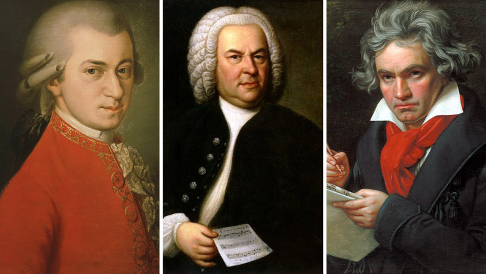

What is Orchestral Music?
Orchestral music is composed by a group of musical instruments known as, you guessed it, an orchestra. The orchestra is made up of instruments from many instrument families, so you may anticipate hearing the sounds of woodwind, brass, percussion, and string instruments in a good symphonic piece. An orchestra typically has between 70 and 100 players, and these ensembles are frequently referred to as symphony or philharmonic orchestras. The Greek words philos, which means "to love," and harmonikos, which means "harmony," are combined to form the word philharmonic. The correct term for this kind of ensemble is a chamber orchestra if it has less than 50 players. Given that an orchestra of this size could fit easily inside one room, it makes obvious that the word chamber in French means "room."
Is Orchestra a Genre?
Although bands are commonly associated with rock music, you would not call a band a genre. The same goes for an orchestra: although orchestras are commonly associated with classical music, it is not appropriate to categorise orchestra as a genre. Also, like a band, an orchestra can embrace a wide variety of genres. Discover just five of those genres below.
5 types of Orchestral Music
- Classical Orchestra:
- As was already established, classical orchestra music is the most well-known type of orchestral music. Classical music is created using conventional methods. Classical music, strictly speaking, refers to works created between 1750 and 1820. At this time, Mozart, Bach, and Beethoven were the three most well-known composers.
- 
- Orchestral Pop:
- Simply put, orchestral pop is pop music that is performed by an orchestra. Personally, we are reminded of the sub-genre by the most recent James Bond theme songs, such as Adele’s Skyfall, Sam Smith’s Writing on the Wall and Billie Eilish’s No Time to Die; but if you’re not a fan of the spy franchise, there are pop songs such as Clean Bandit’s Rather Be and Ariana Grande’s ghostin.
- Orchestral Hip Hop:
- A song can be categorised as orchestral hip hop if an orchestra creates the hip hop rhythms. Since the 1990s, the subgenre has expanded, and we have been gifted with anthems such Coolio and L.V.’s Gangsta's Paradise and Kanye West’s Flashing Lights.
- Electronic Orchestra:
- The compositions in the electronic orchestra genre either feature orchestral instruments combined with electronic instruments, or they are performed by an orchestra and then electronically altered. One of the best examples of electronic orchestra music is Daft Punk’s Derezzed for Disney’s Tron Legacy that was created with an 85-piece orchestra and electronic instruments.
- Orchestral Jazz:
- The jazz scene in New York City in the 1920s is where orchestral jazz first emerged. When an orchestra adopts the rhythms of New Orleans jazz while adhering to its European practises, they produce this organised kind of jazz. The sounds of this genre are similar to those of large band jazz, another subgenre of jazz.